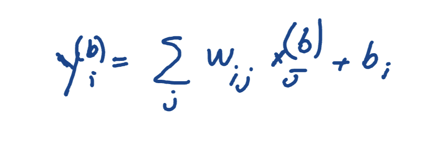
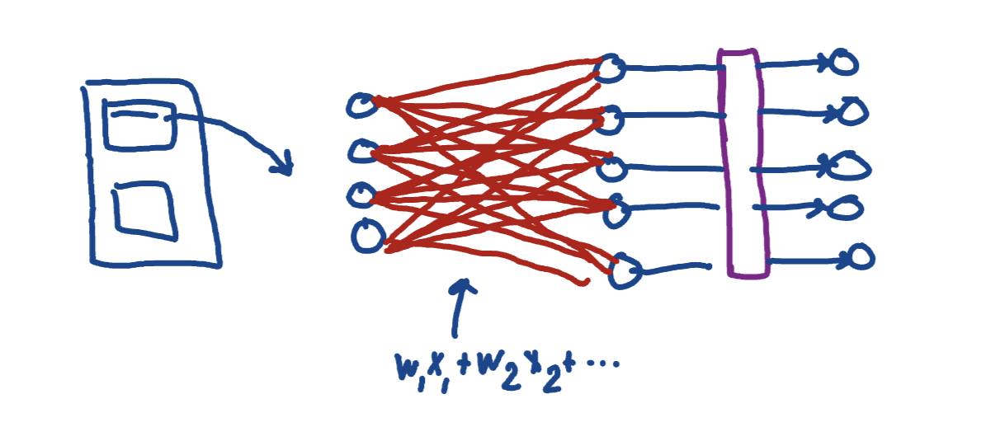
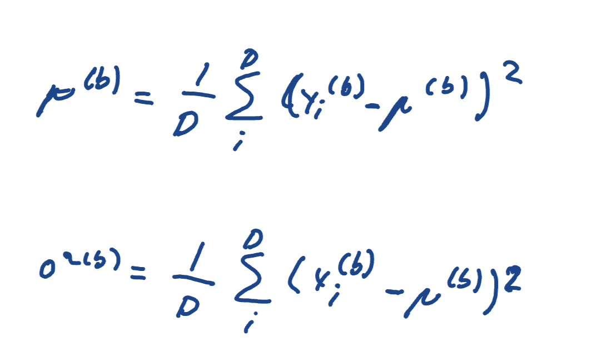
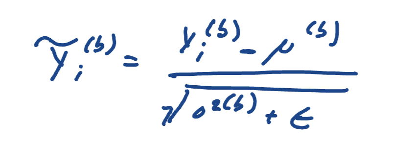

Today I just worked my way through the basic architecture again. On side notes, I'm feeling a lot more confident with the entire process as a whole, keeping track of the shapes of each tensors as they move through the system, and all that. Today, I was focused on understanding the normalization phase, and the nn.Linear code block.
The nn.Linear code block is important because it is the first major step
we have in the direction of learning from our inputs. For context, we've tokenized the raw
words. We created embeddings for them, along with their positions, and added them together
so we can have significance in both order and word meaning. Lastly, we passed them through
attention mechanisms in order to for words to gain significance from one another too. Now,
in each of these step, I think we have used weights, which means there has been learning being
set up in all cases, but I won't lose the forest for the trees and just focus on the big idea.
So, we are at the point where we have our context vectors calculated. Now, they get passed through the
layer nn.Linear , which is defined by this equation:

I used the \(b\) superscript notation to make it easier to track when dealing with different batches, and I also used the summation notation because we are appllying this to every vector in the embedding. But, you could strip it down to \(y = wx + b \) for an individual input. And that is an equation we learned a long time ago - a very simple logistic regression in machine learning, one of the most basic layers. However, let's view a graph of how this linear layer behaves when the input is a batch.

Now, those red lines i stumbled on them a bit, but it is just to show that the output of each individual word, or i should be saying 'nueron', was calculated in consideration of every other nueron. Pretty interesting stuff.
Now, for normalization. Not the most interesting part of LLM's, but its a necessary step in training. Basically, the output of the layers is very randomized, it doesn't hold that much proportional significance. Very similiar to how raw logits are not very helpful unless we use softmax and transfer them to probabilities. So we use normalization layers in order to make better sense of the outputs, but it also smooths the training process a lot better for reasons i'll discover tomorrow. Here is some of the mathematics invovled:


I just went through a lot of steps, but the output y with the tilde squiggly is just used to demonstrate that it is the modified output of the raw outputs from the linear layer.
From this point on, stuff is getting a lot harder! Let's take a break tonight, just because i have a lack of a plan (which i will fix tomorrow), and get back in the zone tomorrow. I'm at the stage where a lot of my other projects would have stopped honestly, so lets push really hard to get past this zone of difficulty so we have good results.